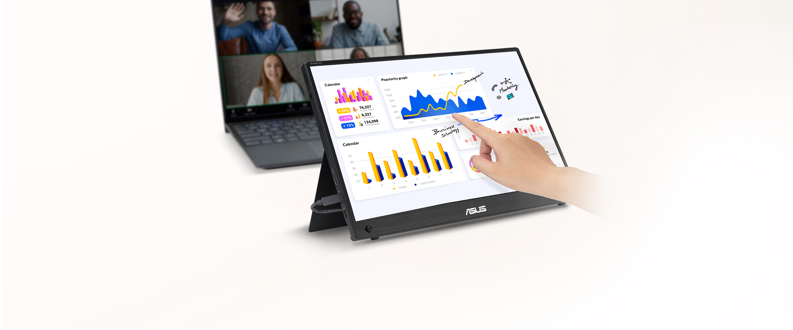
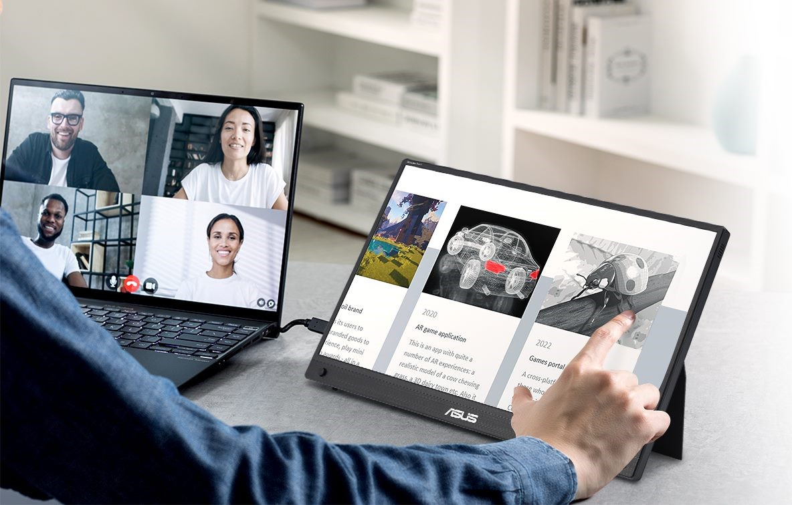
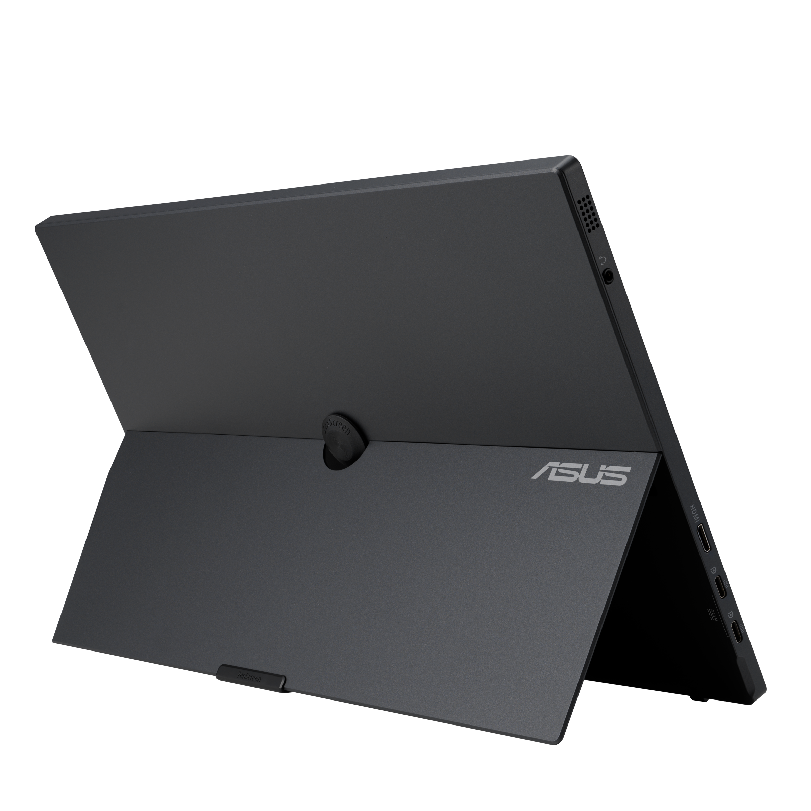
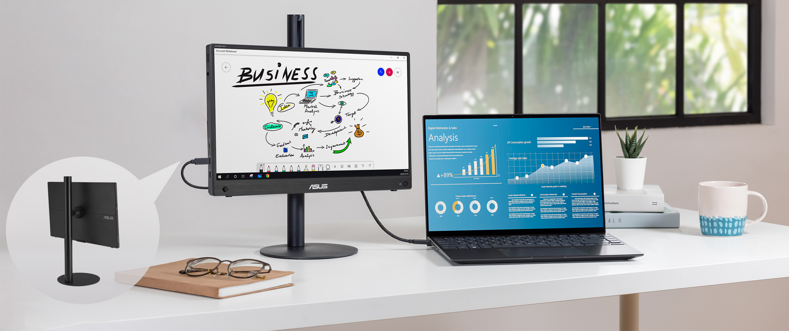
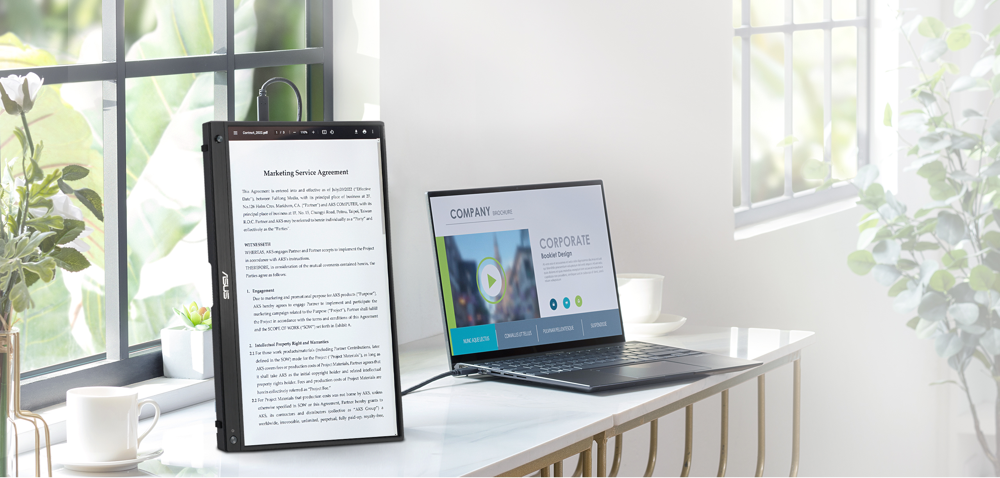
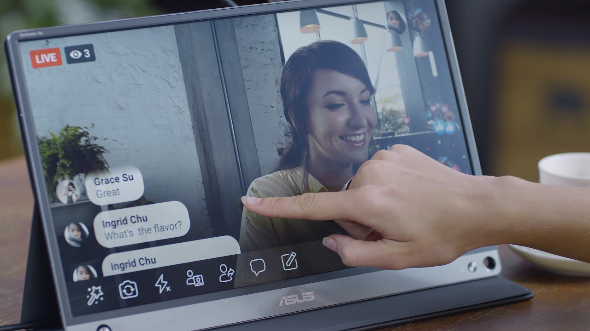
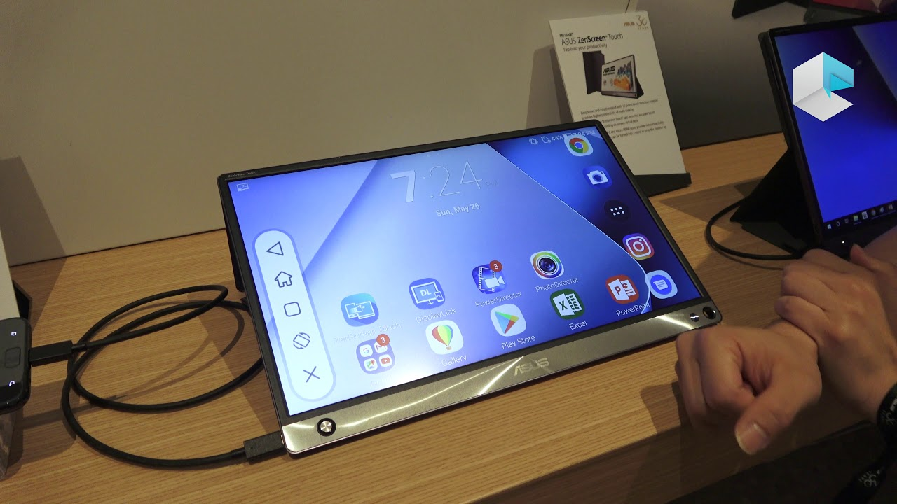
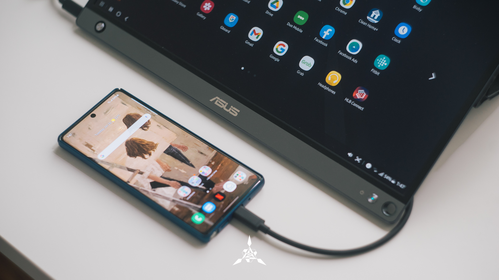
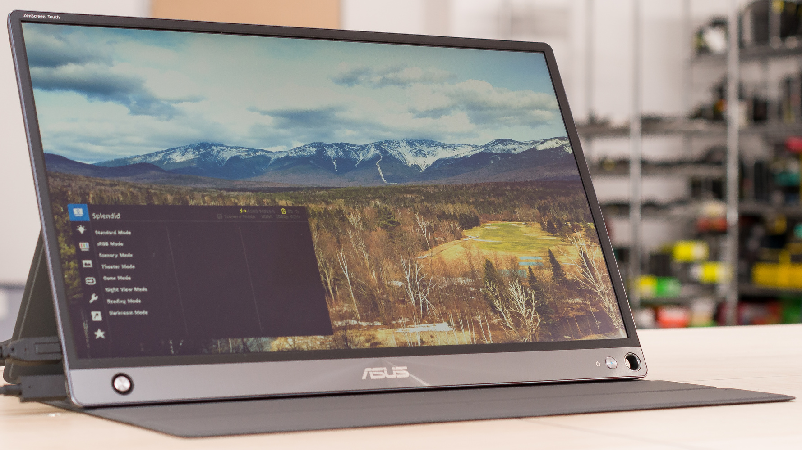

ASUS ZenScreen Touch MB16AHT taşınabilir monitör
ASUS ZenScreen Touch MB16AHT taşınabilir monitör— 15,6-inç FHD (1920 x 1080), IPS, 10 Nokta Dokunmatik, Mini-HDMI, Ergonomik Katlanabilir Stant, Tripod Soketi, ASUS Flicker Free ve Düşük Mavi Işık teknolojileri.
- -10 nokta dokunmatik desteğiyle 15.6 inç taşınabilir IPS monitör
- -10 nokta dokunmatik işleviyle hızlı ve kullanışlı giriş, aynı anda birden fazla işlem yapma olanağı vererek üretkenliği artırır
- -İki adet USB-C® (DP Alt modu ile) ve mini HDMI® bağlantı noktaları, PC, laptop veya oyun konsolları ile çok yönlü bağlantılar sağlar
- -Entegre katlanabilir stant, yatay ve dikey konumlandırmaya izin vererek farklı kullanım biçimlerine uyum sağlar
- -Standart tripodlarla uyumluluk için dahili ¼” soket
ASUS ZenScreen Touch MB16AHT 15.6inç FHD taşınabilir monitörün sahip olduğu hızlı tepki veren kullanışlı 10 nokta dokunmatik ekran, kaydırma, sürükleme ve kıstırma hareketlerine destek vererek kullanıcıların işlerini daha verimli bir şekilde halletmelerini sağlıyor. İki adet USB-C™ ve mini-HDMI bağlantıları birçok farklı cihazdan içerik görüntülemeyi sağlıyor. Böylece geniş görüntülerle istediğiniz yerde en iyi iş ve eğlence deneyimini yaşayabiliyorsunuz.

ASUS ZenScreen Touch MB16AHT Taşınabilir Monitör
Üretkenlik, parmaklarınızın ucunda
ASUS ZenScreen Touch MB16AHT 15.6inç FHD taşınabilir monitörün sahip olduğu hızlı tepki veren kullanışlı 10 nokta dokunmatik ekran, kaydırma, sürükleme ve kıstırma hareketlerine destek vererek kullanıcıların işlerini daha verimli bir şekilde halletmelerini sağlıyor. İki adet USB-C™ ve mini-HDMI bağlantıları birçok farklı cihazdan içerik görüntülemeyi sağlıyor. Böylece geniş görüntülerle istediğiniz yerde en iyi iş ve eğlence deneyimini yaşayabiliyorsunuz.

Üretkenliğe Tıklayın
ÜRETKENLİK
Üretkenliğe Tıklayın Etkileşimli 10 nokta dokunmatik ekrana sahip olan ZenScreen Touch, son derece hassas ve kusursuz bir dokunmatik deneyimi sunuyor. Parmaklarınızla belgeleri düzenleyebilir, slaytların üzerine çizim yapabilir veya oyun oynayabilirsiniz. Windows 11 uyumu sayesinde daha akıllı ve verimli bir şekilde çalışabilirsiniz.

Rahat İzleme İçin Tasarlandı
Eşsiz Rahatlık
Katlanabilir stant sayesinde ZenScreen Touch MB16AHT’yi tüm düz yüzeylere yerleştirebilirsiniz. Ayrıca stant ile rahat izleme açıları ve çalışma pozisyonları için kolay bir şekilde eğim ayarı yapabiliyorsunuz. Ek olarak, arka kısımda yer alan ¼” dişli tripod soketi, ekranı standart bir tripoda* veya masaya kolayca montajlamanıza olanak tanır. *Tripod standı paket içeriğine dahil değildir.

Otomatik Ekran Döndürme
Auto Rotate
Windows işletim sistemli bir PC’ye bağlandığında, ASUS DisplayWidget Lite yazılımı* ZenScreen’in konumunu otomatik olarak tespit ederek görüntüyü yatay veya dikey olarak ayarlar. Yatay mod, sunumlar ve Excel tabloları için idealken, Dikey mod ise belgeleri, kitapları veya web sitelerini görüntülemek için daha iyidir. *Yazılım gereklidir. Otomatik döndürme işlevi yalnızca Windows işletim sistemi ile çalışır.

Zengin Bağlantı Seçenekleri
DZenScreen Touch MB16AHT’nin sahip olduğu mini HDMI ve iki adet USB-C* bağlantı noktası ses-görüntü sinyali, güç girişi ve veri aktarımı (dokunmatik işlev için) için kullanılabilir.

Tüm İhtiyaçlarınız için Tek Kablo
ZenScreen MB166C, kaynak cihazdan güç ve görüntü aktarımı için sadece tek bir USB bağlantısı kullanır. Bu da daha az kablo ve daha düzenli bir çalışma alanı anlamına gelir.

Otomatik Döndürme
DisplayWidget yazılımıyla kendi yönünü otomatik olarak belirler ve görüntüyü yatay veya dikey olarak ayarlar. Katlanabilir kılıfa ve arka kısımda tripod yuvasına sahip kullanıcı dostu tasarım çok yönlü kullanım olanağı sağlar.

USB-C Uyumlu
USB Type-C bağlantısı (DP Alt modu) uyumlu cihazlarla rahat bir kullanım sunar.

ASUS ZenScreen Touch MB16AHT taşınabilir monitör
- 10 nokta dokunmatik desteğiyle 15.6 inç taşınabilir IPS monitör
- 10 nokta dokunmatik işleviyle hızlı ve kullanışlı giriş, aynı anda birden fazla işlem yapma olanağı vererek üretkenliği artırır
- İki adet USB-C® (DP Alt modu ile) ve mini HDMI® bağlantı noktaları, PC, laptop veya oyun konsolları ile çok yönlü bağlantılar sağlar
- Entegre katlanabilir stant, yatay ve dikey konumlandırmaya izin vererek farklı kullanım biçimlerine uyum sağlar
- Standart tripodlarla uyumluluk için dahili ¼” soket